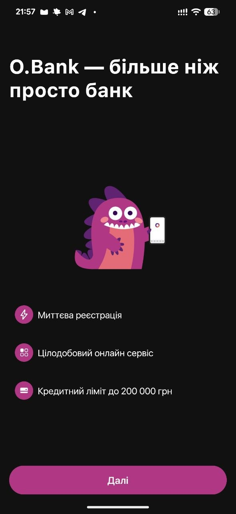
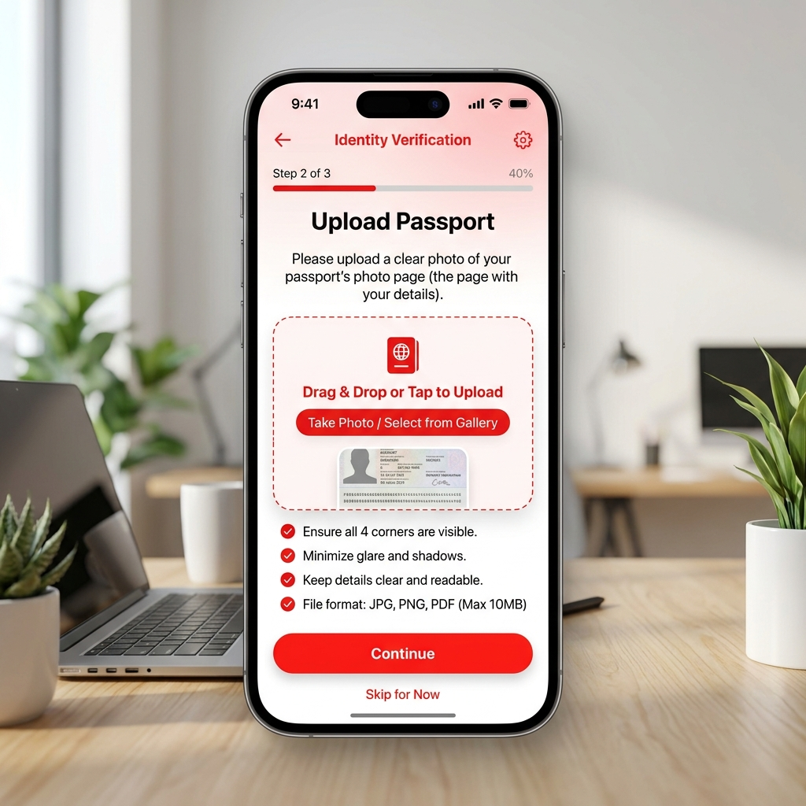
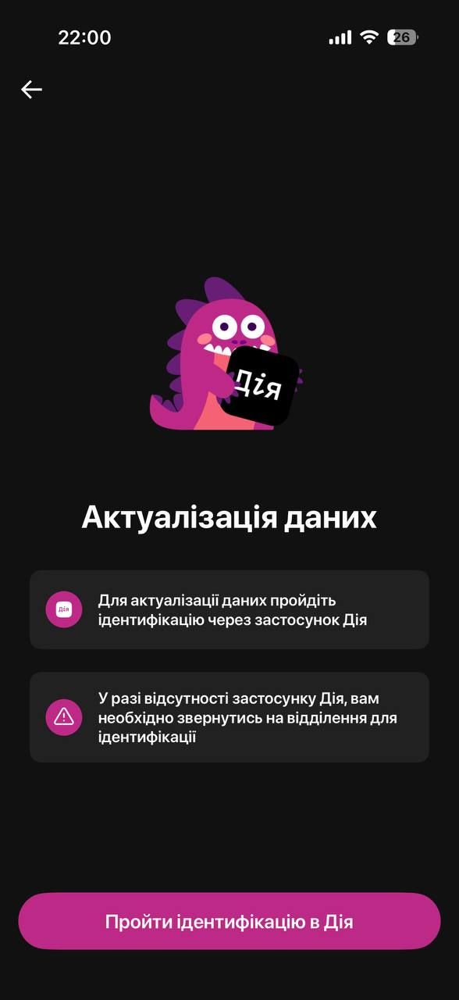
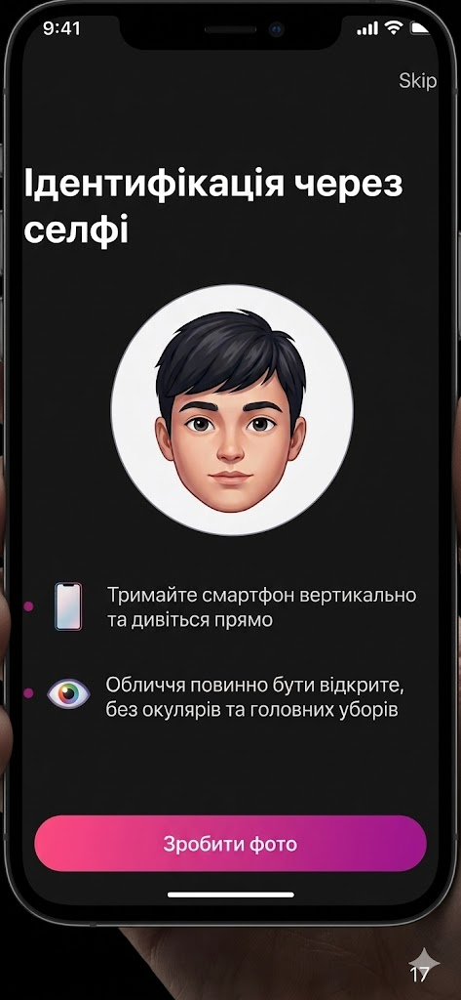
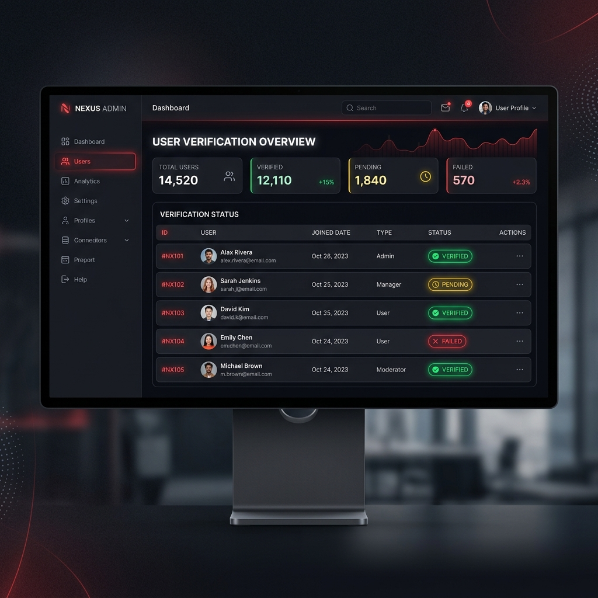
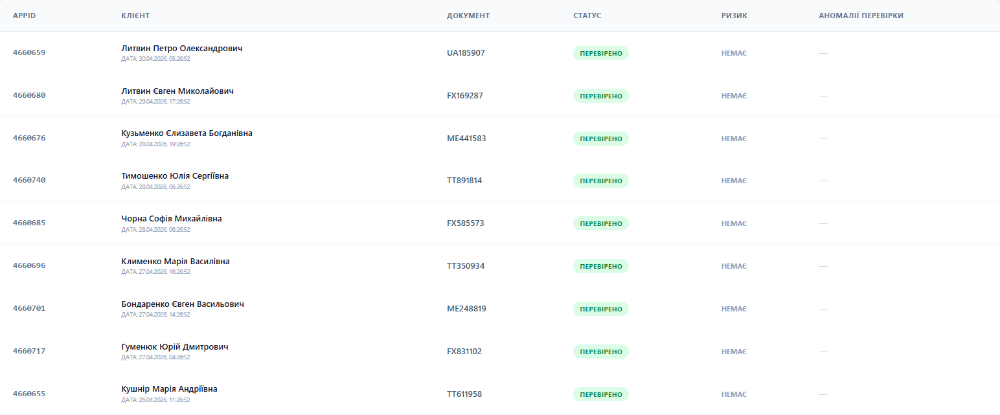
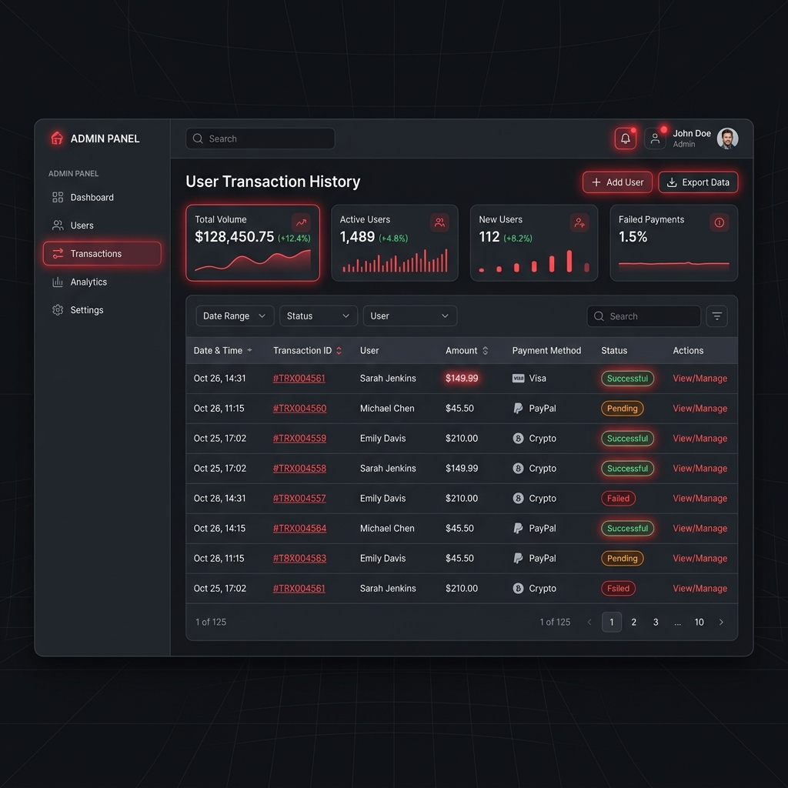
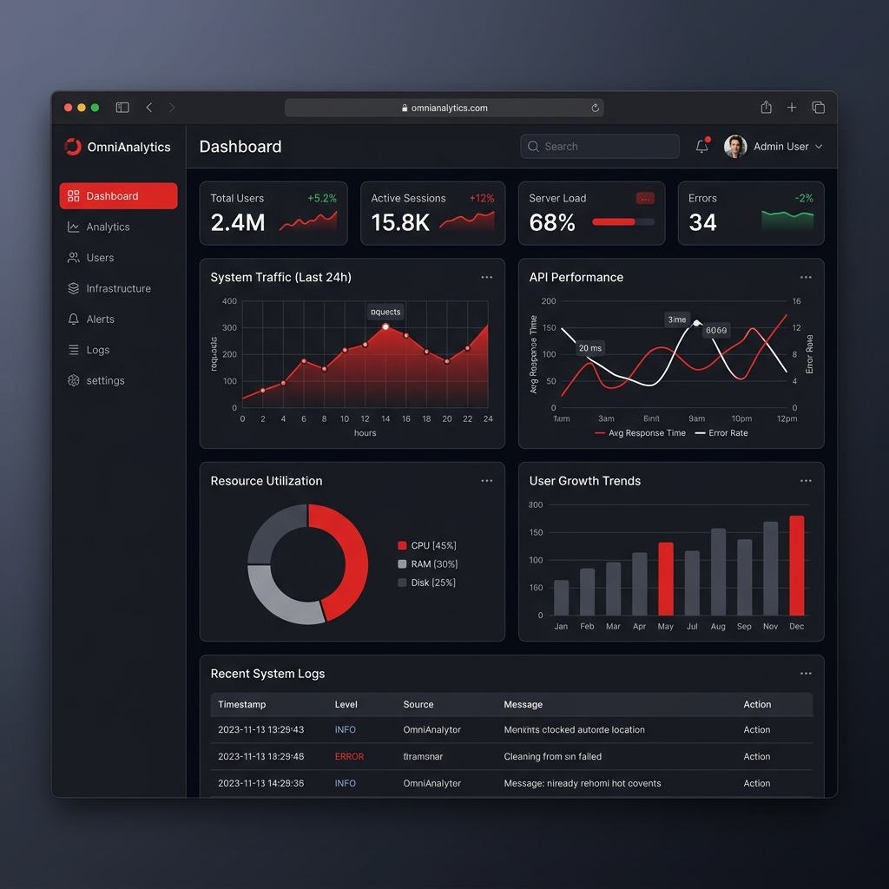

МІНІСТЕРСТВО ОСВІТИ І НАУКИ УКРАЇНИ
КАРПАТСЬКИЙ НАЦІОНАЛЬНИЙ УНІВЕРСИТЕТ ІМЕНІ ВАСИЛЯ СТЕФАНИКА
ЗВІТ
про виконання програми виробничої практики
Відгук і оцінка роботи студента на практиці
Студент Куцінський Денис Євгенович проходив навчальну практику в АТ «Ідея Банк» з 16 березня по 24 квітня 2026 року. Під час практики студент працював у якості розробника рішень для автоматизації банківських процесів у підрозділі верифікації клієнтів. Проєкт, над яким виконувалася робота, являє собою внутрішню веб-платформу для моніторингу та обробки даних, де серверна частина реалізована мовою Python із використанням фреймворку FastAPI, а клієнтська частина побудована на базі React із TypeScript для забезпечення надійної типізації інтерфейсу.
На практиці студент був залучений до розробки архітектури внутрішнього дашборду, що включало створення REST API-ендпоінтів для обробки верифікаційних запитів та проєктування схем даних у PostgreSQL. В обов'язки студента також входила програмна реалізація логіки автоматичного звітування, розробка компонентів інтерфейсу для візуалізації статусів перевірок та забезпечення інтеграції фронтенд-частини з банківськими сервісами. Окремим напрямом роботи стала оптимізація скриптів для порівняння даних із зовнішніх реєстрів, що дозволило автоматизувати рутинні операції відділу.
Студент добре впорався з поставленими завданнями та в заплановані терміни їх виконав, продемонстрував здатність швидко засвоювати нові технології в галузі фінтеху, вдумливо ставиться до якості коду та принципів інформаційної безпеки фінансової установи.
Рекомендацією для Дениса буде глибше вивчення архітектури високонавантажених банківських систем, методів машинного навчання для виявлення фрод-активності та інструментів контейнеризації для розгортання сервісів. Це дозволить бути більш конкурентним на ринку розробки програмного забезпечення.
Візуалізація Проєкту
Етапи реєстрації клієнтів та адміністративна панель
Клієнтський Додаток (Реєстрація)

Стартовий екран мобільного застосунку.

Інтерфейс для завантаження та попередньої перевірки документів (ID-картки, ІПН).

Актуалізація даних клієнта в системі.

Етап біометричної верифікації особи через систему розпізнавання обличчя.
Система Автоматизації Верифікації

Головна панель моніторингу помилок та загальної статистики роботи системи в реальному часі.

Пошук за критеріями, що дозволяють переглядати анкетні дані, що відповідають тому чи іншому критерію.

Пошук за ПІБ та серією паспорта, що дозволяє переглядати анкетні дані, що відповідають тому чи іншому параметру.

Вигляд готової таблиці у форматі .csv для подальшого аналізу.
Про проєкт
Основним завданням проєкту стала розробка системи збору та аналізу логів про помилки, що виникають у процесі верифікації. Платформа дозволяє в реальному часі отримувати дані про технічні збої, структурувати їх за типом та критичністю, а також формувати детальну звітність. Це значно спрощує процес ідентифікації причин виникнення проблем та суттєво пришвидшує їх виправлення технічною командою, мінімізуючи простої в роботі банківських сервісів.
Чому я навчився
- Технологічний стек: Поглибив знання Python (FastAPI) та навчився будувати надійні API. На практиці застосував React з TypeScript для створення складних інтерфейсів.
- Робота з даними: Отримав досвід проєктування реляційних баз даних у PostgreSQL та написання складних SQL-запитів для аналітики.
- Банківські процеси: Ознайомився з регламентами верифікації клієнтів (KYC) та принципами безпеки фінансових даних.
- Soft Skills: Навчився працювати в команді, дотримуватися дедлайнів та документувати код згідно зі стандартами банку.
Графік робіт та завдань
Період проведення: 16.03.2026 – 24.04.2026